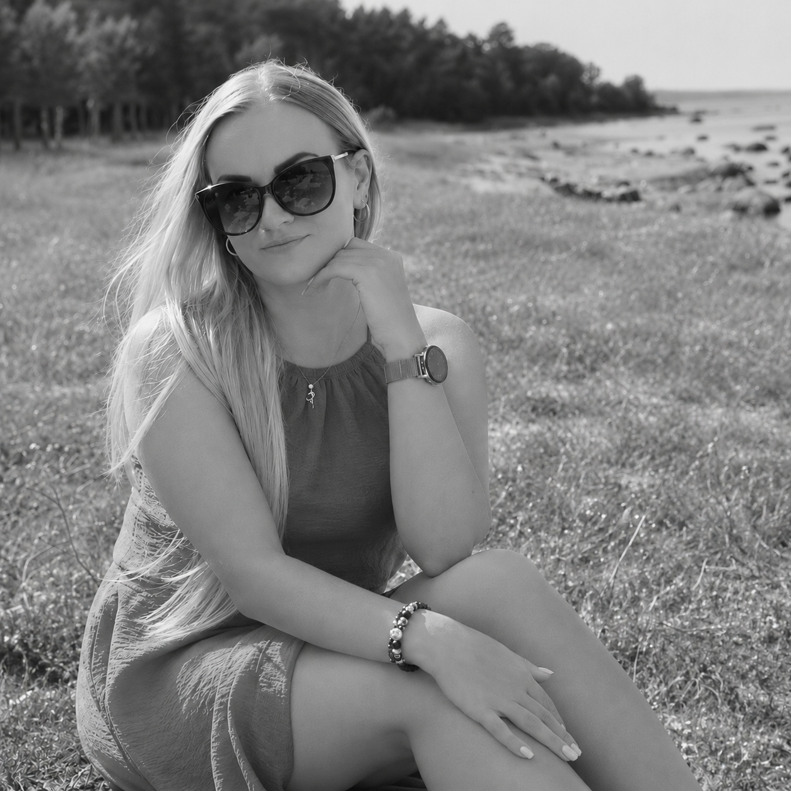

Minu õpiteekond
Tere! Mina olen Helena

Õpin tarkvaraarendust ja loon oma esimesi veebiprojekte. Siin tutvustan ennast, oma õpinguid ja seda, mida praegu õpin.
Minust
Olen õpihimuline ja mulle meeldib uusi oskusi samm-sammult omandada. Vabal ajal naudin reisimist, looduses viibimist ja uute kohtade avastamist.
Minu huvid
- Reisimine
- Looduses viibimine
- Uute kohtade avastamine
Minu eesmärk
Soovin õppida veebilehti looma ja saada tarkvaraarenduses samm-sammult paremaks. Praegu harjutan HTML-i ja CSS-i kasutamist.
Minu projekt
Minu tutvustusleht
See on minu esimene veebiprojekt. Ehitasin lehe HTML-i ja CSS-iga, et harjutada sisu struktureerimist, kujundamist ja mobiilisõbralikku paigutust.
Tehnoloogiad: HTML ja CSS
Järgmine samm: täiendan lehte ja lisan uusi projekte, kui neid valmib.